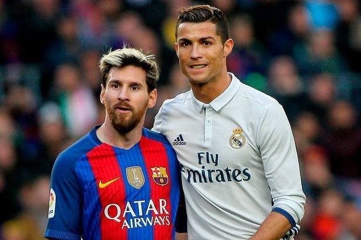

Football isn't just a sport for me; it's a profound passion, a vital outlet, and a source of immense joy. The
sheer act of stepping onto the pitch, feeling the grass beneath my cleats, and hearing the thud of the ball
against my foot is a sensation that transcends mere physical activity. It's a release, a moment where the
stresses and anxieties of daily life fade into the background, replaced by the focused intensity of the game.
The rhythm of the match, the strategic interplay between teammates, and the exhilarating pursuit of a goal
create a dynamic and engaging experience that's both mentally and physically stimulating.

Benefits of playing football
Physical Benefits:
Improved Cardiovascular Health:
The constant running and movement in football significantly elevates heart rate, strengthening the
cardiovascular system.
Increased Muscle and Bone Strength:
Football engages various muscle groups, particularly in the legs, and the impact of running and jumping
helps strengthen bones.
Enhanced Coordination and Agility:
The game requires quick reflexes, precise movements, and excellent hand-eye coordination.
Weight Management:
Football is a high-intensity sport that burns a significant number of calories, aiding in weight loss and
maintenance.
Increased Stamina:
Regular play builds endurance and stamina, allowing players to sustain physical activity for longer periods.
Mental Benefits:
Improved Cardiovascular Health:
The constant running and movement in football significantly elevates heart rate, strengthening the
cardiovascular system.
Increased Muscle and Bone Strength:
Football engages various muscle groups, particularly in the legs, and the impact of running and jumping
helps strengthen bones.
Enhanced Coordination and Agility:
The game requires quick reflexes, precise movements, and excellent hand-eye coordination.
Weight Management:
Football is a high-intensity sport that burns a significant number of calories, aiding in weight loss and
maintenance.
Increased Stamina:
Regular play builds endurance and stamina, allowing players to sustain physical activity for longer periods.